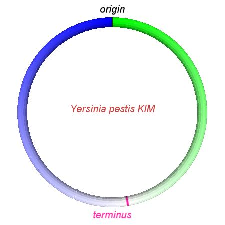
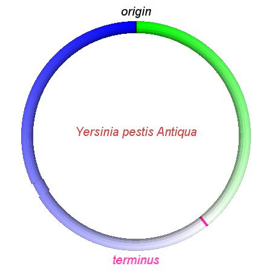
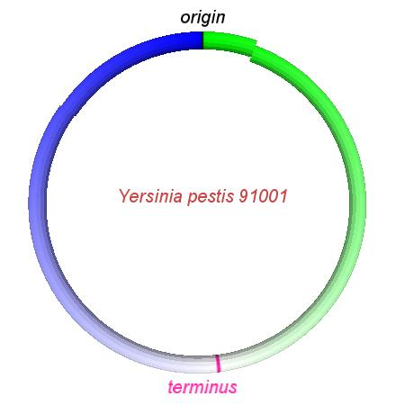
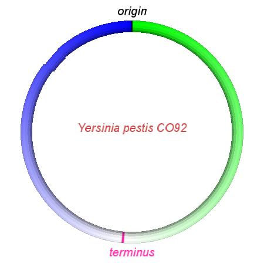
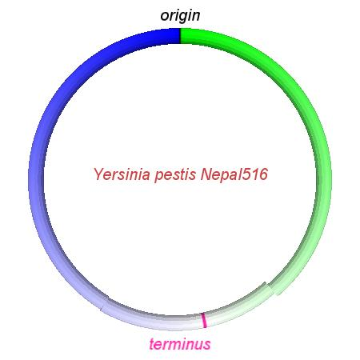
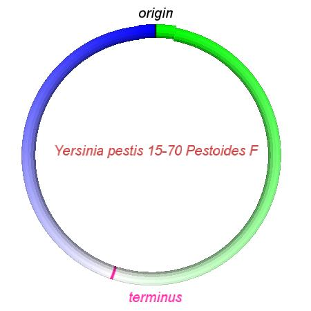
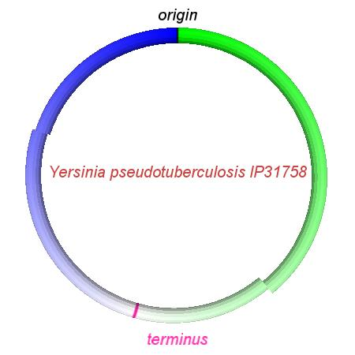
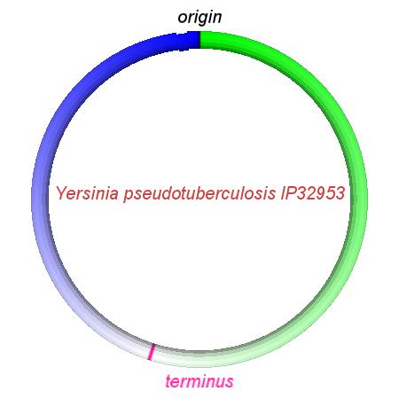

We commonly think of molecular evolution as a process of replication with mutation and subsequent natural selection on mutations. In genomic DNA, one class of mutations modifies the arrangement of chromosomes without otherwise changing the content. While the mutational processes leading to genomic rearrangement have been well characterized, little is known regarding the patterns with which natural selection acts on genome rearrangement mutations.
In this work we introduce a set of statistical methods to infer and analyze ancestral genome arrangements in circular bacterial genomes. Our methods assume that the organisms under study are related by an evolutionary process and that their ancestry and genome arrangement history can be described by a binary tree with inversion mutations mapped onto the branches.
The results of genome rearrangement analysis in eight closely-related Yersinia genomes has been published in PLoS Genetics. Supplemental data for that study can be found on this web site, along with the software and scripts used to perform the analysis.
The alignment is in eXtended Multi-FastA format, as used by Mauve and described here.
yersinia8_alignment.zip [38 Mb] contains the alignment, along with the source genomes annotated in genbank format.
The alignment can be interactively browsed using the Mauve software.
yersinia8.perms [2 Kb] contains the signed permutation matrix derived from the above alignment
yersinia8.lcbs [10 Kb] is a tab-delimited text file containing the genomic coordinates corresponding to each LCB.
yersinia8_run1.0.zip [69 Mb] contains the posterior sampling of BADGER when applied to the Yersinia LCBs
These videos show the predicted inversion events that transform an ancestral Yersinia to a modern isolate. Origin and terminus of replication are marked, and the ancestral replichores are colored blue and green. Regions near the terminus are light in color, while regions near the origin in the ancestor are darker.
|  |  |  |  |  |  |  |  |
| Y. pestis KIM | Y. pestis Antiqua | Y. pestis 91001 | Y. pestis CO92 | Y. pestis Nepal516 | Y. pestis PestoidesF | Y. psuedotuberculosis IP31758 | Y. psuedotuberculosis IP32953 |
The methods for genome rearrangement analysis have been implemented in a set of scripts and programs
collectively referred to as barphlye.
barphlye makes use of the BADGER 1.01b software for MCMC analysis of inversion phylogeny, written by
Donald Simon and Bret Larget.
The latest release of barphlye may be downloaded here.
A full barphlye analysis also depends on R, available from http://www.r-project.org. Input to barphlye is a signed permutation matrix, which we suggest computing from genome sequence using the progressiveMauve software, available from http://darlinglab.org/mauve. Once you have obtained these other tools, download barphlye. Build the software on Mac OS X or unix/Linux with the following commands:
tar xzf barphlye-0.0.0.tar.gz cd barphlye-0.0.0 ./configure --prefix=$HOME make install (setenv PATH "$HOME/bin:$PATH" || export PATH="$HOME/bin:$PATH")
Congratulations. Your new software is ready to use. For usage instructions please see the example below.
If you use barphlye in your own work, please cite both the barphlye and BADGER publications:
For any inquiries, please contact Aaron Darling <darling(at)cs(o)wisc(o)edu>.
WARNING: use of the barphlye software requires familiarity with unix and command-line software. You have been warned!
The steps in the analysis procedure can be summarized as:
This example assumes that you have finished genome sequence data obtained from the NCBI ftp site in either GenBank format (.gbk) or FastA format (.fna). For the following example, we will use three hypothetical genome sequences in GenBank format, with filenames of NC_001.gbk, NC_002.gbk, and NC_003.gbk.
Run the following command to compute a genome alignment, replacing the three hypothetical genomes with your own files:
progressiveMauve --output=my_alignment.xmfa NC_001.gbk NC_002.gbk NC_003.gbkThe alignment may take anywhere from five minutes to several hours to compute, depending on the number and size of the genomes involved, and the speed of the computer. The resulting alignment will be in an XMFA format file called my_alignment.xmfa.
The Progressive Mauve alignment may contains alignments of rearranged segments that are not conserved among all genomes. Since BADGER does not (yet) cope with gene gain and loss we must project the alignment to segments conserved among all taxa with the following command:
projectAndStrip my_alignment.xmfa my_alignment-Nway.xmfa 0 1 2 ... N-1The numbers 0..N-1 represent the indices of the genomes to include in the projection. Normally one would include all N genomes by listing out all numbers 0..N-1, but it is possible to remove some genomes from the projection by leaving out their index number. The numbering order corresponds to the order the genomes were given during the progressiveMauve alignment. We may now create a signed permutation matrix and LCB coordinates for BADGER with the following command:
makeBadgerMatrix my_alignment-Nway.xmfa my_alignment.perms my_alignment.lcbsThe programs projectAndStrip and makeBadgerMatrix are accessory programs from the Mauve genome alignment software. They are not currently packaged with the barphlye source code. Current versions can be downloaded for the platform of your choice from the "other programs" section of the Mauve snapshots page.
BADGER is a fairly complex MCMC program, and full instructions on its usage can be found on the BADGER web site.
It may be desirable to examine how well BADGER was able to resolve the phylogeny of the organisms under study. The SplitsTree software provides a means to view phylogenetic tree signal along with ambiguity in the phylogenetic reconstruction by constructing a consensus network. Before loading BADGER output into SplitsTree, it must be reformatted using the following command:
badgerTreToNexus.pl <badger .tre> <number of taxa> <mydata.nex>The resulting NEXUS format file can be loaded into SplitTree and a consensus network constructed. Be sure to remove the appropriate number of trees as burn-in. An example consensus network can be viewed here.
For this step, it is necessary to pick a reference genome and identify the origin of replication and the terminus dif site. With these quantities known, the format of the command-line to summarize the BADGER output is:
arrangement <burnin cycles> <LCB size filename> <Ref genome origin> <Ref genome terminus> <Ref genome length> <[permutation file 1] ... [permutation file N]> <[topology file 1] ... [topology file N]>Assuming we use 10000 burnin cycles in our example, the origin is located at nucleotide 1, the terminus at 2300000, and a reference genome size of 5000000, then our command will look like:
arrangement 10000 my_alignment.lcbs 1 2300000 5000000 run1.0.prm run1.0.top
Assuming that the command to summarize the posterior distribution has completed successfully, it is now possible to generate graphs of things like historical replichore balance, inversion sizes, and so on. To do so, run the following command:
R CMD BATCH inv_lengths.RIf any errors occur, the file inv_lengths.Rout will contain the relevant error messages. That file will also contain results of various statistical tests performed on the data.
The arrangement program prints the maximum a-posteriori estimate of the genome rearrangement history to the console. That estimate can be used to generate videos of the rearrangement history along any branch of the phylogeny.
The video rendering system depends on the java-based processing software and a few additional modules. Specifically, it requires:
{kind=link}